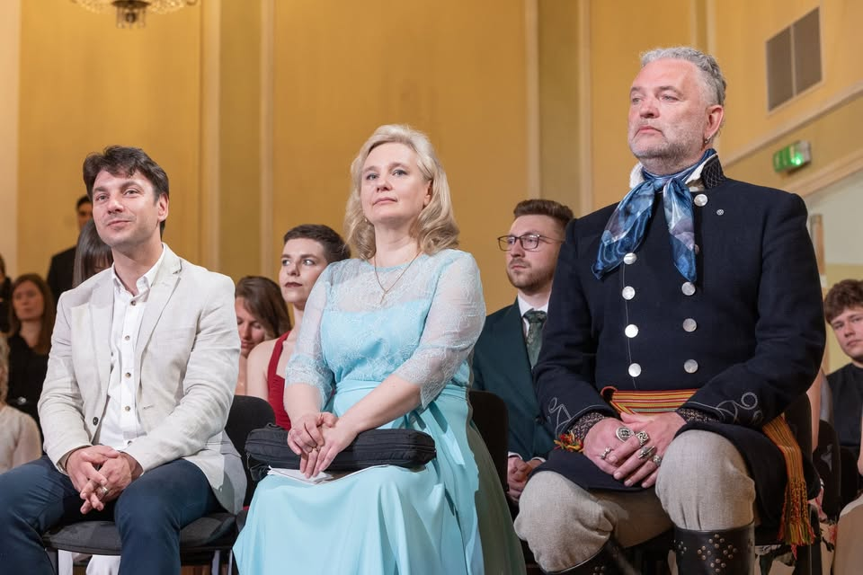
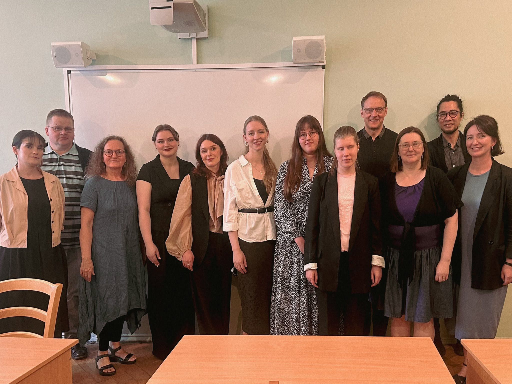
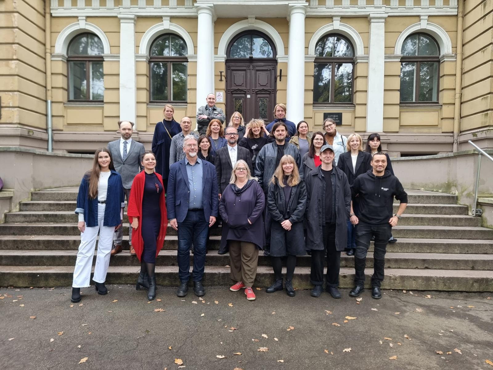

The Doctoral School of the Jāzeps Vītols Latvian Academy of Music
Welcome to the Doctoral School of the Jāzeps Vītols Latvian Academy of Music

The Doctoral School (2024) of the Jāzeps Vītols Latvian Academy of Music (JVLMA) combines two doctoral study programmes:
- The Academic Doctoral Study programme “Musicology” (dating from 1999), focused on the science of music or musicology. This programme has evolved within the JVLMA and has become a truly remarkable scientific discipline.
- The Joint Professional Doctoral Study programme in Arts “Arts” (dating from 2021), which has been implemented in close collaboration with the Art Academy of Latvia and the Latvian Academy of Culture. The Joint Professional Doctoral Study programme makes internationally recognised professional studies possible, thus cultivating specialists who meet the needs of modern culture and society. These artists-researchers also implement the theoretical knowledge acquired within the programme into high-value artistic practice.
The research and studies within the Doctoral programme take place in an interdisciplinary and international environment. The Doctoral School ensures the strategic planning, management, and supervision of these processes. Thus, it not only promotes academic excellence but also contributes significantly to the creation of modern cultural and societal processes.
Application and Admissions
Academic programme
Academic Doctoral Study Programme "Musicology"

Musicology is a vast industry represented by music historians, theorists and journalists. Upon completion of their studies, students obtain the qualification of a musicologist with the rights to teach music theory subjects.
The study process also includes a variety of work experiences, such as:
- archivist
- teacher
- university assistant
- publicist
- lecturer
- radio and other media
which allows an insight into each career and helps choose the best path for future professional growth. In the same way, students and teaching staff of the Musicology Department work daily with the JVLMA Scientific Research Centre (SRC), organising interdisciplinary scientific conferences annually. A large number of the department's lecturers are researchers at the SRC and work with ongoing research of issues in the musicology sector.
The voices of JVLMA musicology graduates are heard on Latvian Radio, and their articles can be read in periodicals, music journals and the press. The contribution of musicologists is also important in the development of Latvian concert life as they work in major concert agencies, the Latvian National Opera and Ballet, as well as being guest lecturers. Meanwhile, those who have chosen research as their main field are researchers of JVLMA and other scientific institutions.
Musicologists also work successfully as teachers of music theory subjects in Latvian professional oriented and professional secondary education music institutions.
Professional programme
Joint Professional Doctoral Study Programme in Arts

The Joint Professional Doctoral Study Programme in Arts was created in co-operation among the Jāzeps Vītols Latvian Academy of Music (hereinafter — JVLMA), the Art Academy of Latvia (hereinafter — LMA), and the Latvian Academy of Culture (hereinafter — LKA).
Since 2021 the following sub-programmes are provided:
- Sub-programme “Music and Performing Arts” implemented by JVLMA (code 51212) – areas of artistic activities: Music, Choreography;
- Sub-programme “Visual Arts and Design” implemented by LMA (code 5121 1/4) – areas of artistic activities: Visual Arts, Audiovisual and Media Arts, Design;
- Sub-programme “Audiovisual Arts, Theatre and Contemporary Dance” implemented by LKA (code 51213) – areas of artistic activities: Audiovisual Arts, Theatre Arts, Contemporary Dance Arts.
The strategic objective of the study programme is to organise professional studies meeting cultural, public and societal needs, based in artistic creativity and science, as well as applicable in artistic practice, as a result of which skills of creating highly valuable art works based on scientific research are acquired and practical skills in the implementation of unique artistic ideas are developed. The concept of a professional doctorate in art includes art-based research. Artwork and art-based research are unified and equally essential components of the doctoral thesis.
Upon completion of the Joint Professional Doctoral Study programme in Arts, the doctoral student is able to prove that they know and understand the most relevant scientific theories and concepts, are proficient in research methodology and contemporary research methods in the relevant sector of art or culture and at the intersection between various spheres, as well as can independently enhance artistically high-value practical skills in the implementation of unique international level ideas and artistic creativity.
The duration of study programme is 3 years, its amount is LV 132/ ECTS 198 credits. After completing the studies and artistic creative work, as well as developing and defending the doctor's theoretical research in state examinations, the professional doctoral degree in arts is awarded.
Contact Information
Head of the Doctoral School, asoc. prof. Diāna Zandberga: diana.zandberga@jvlma.lv
Coordinator of the Doctoral School, Paula Auzāne: paula.auzane@jvlma.lv